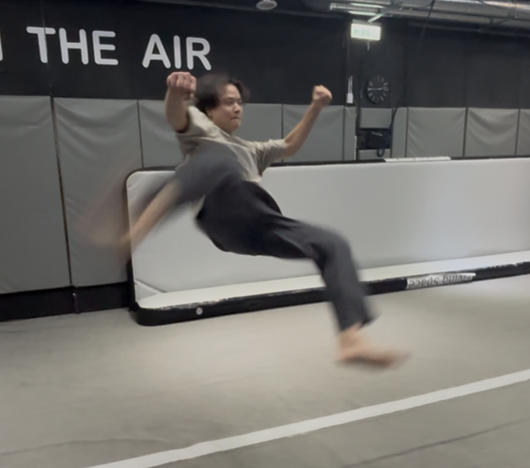
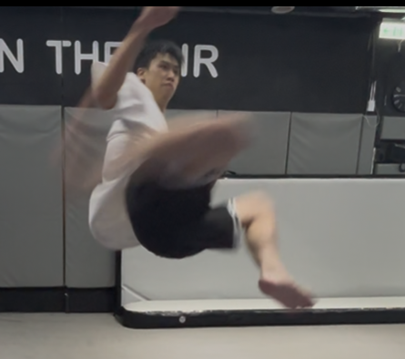
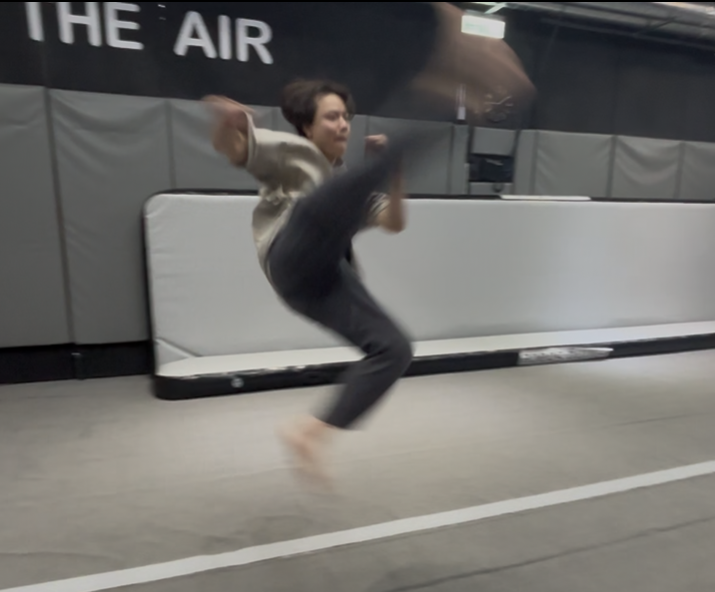
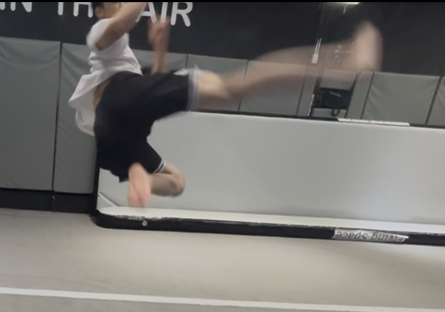

75 小傑老師1v1 第一堂課
| Section |
Point |
| WarmUp |
|
| Stretching |
|
| Skill |
找不到一個正確的動力系統，動作都是單獨練；但其實動作都是有一套動力鏈可以貫穿的 |
| Concept |
|
warm up
- 熱身先從“核心”開始
- 核心：正／左／右 棒式（到肌肉開始活躍）
- 跳躍
- 直腿雙腳跳跳箱：上＆前＆上＆後 來回*6
- swing跳高 下腳站跳箱 一腳*6
- 雙腳跳高：不要求直腿、要“抽高”抽到最久
- 倒立
- 抓腳）空倒立：手貼耳朵（不要太開）、肩膀要推起來（不要塌陷）才會穩
- 抓腳）空倒立連推地板*10：手伸直 用肩膀上下直接「彈」（aka我們練腳環的彈力感）（不要用彎手 那樣是用肌力）
- 倒立走路：手貼耳朵（太開 手會沒法拿起來）一開始先小幅度蠕動
- 手上高punch：腳要收回來 不能往後
- 基本踢
- 左右 正踢
- 低身扶牆後踢：手伸直（貼耳朵）扶牆往後站；後踢時 下腳要伸直but上半身不能抬起來（如果伸不直 就是下腳踩太前面）如此才有延伸股前側；後腳踢＆下腳伸直是同時
- 左右 側踢
大問題：核心不足（肌力、感受度都是）
stretching
-
大劈
- 先拉「一彎一直」：
- 先雙手撐手肘：重心放到彎的那邊、但是身體不要整個彎曲歪掉 還是正位；體感以為的腳正位不會是真的正，要用髖的肌肉 把直的那邊往前推＆彎的那邊往後收？；
- 再左右肩膀貼地：一手持續撐地 另一手從空隙伸直過去帶著該邊肩膀貼地（頭也會）
- 拉完彎的在拉「全直」：...?
- 大劈拉完 要能直接直腿往後坐（不彎腳）：這能再拉到股的更深處
- 坐著大劈拉側向鏈：手貼耳朵 抓另一邊腳 頭貼膝蓋（兩邊）
- 坐著的大劈雙人拉筋：被拉的開腳 教練在裡面一樣坐著撐開腳（腳掌抵住學生的小腿處），然後兩人抓手；接著教練用力往後，學生要維持上半身挺胸的正位（不能蜷起來）用力抵抗 不要被拉走
這玩意感覺很吃教練的上肢欸
-
正劈
- 坐著大劈完直接轉正劈
- 手肘往前貼地 頭碰膝蓋
- 手往後滿掌摸地（大概會摸在胯下） 肩胛打開 頭往上看
-
趴地板 拉肚子＆跪地板 手伸直
-
拱（圓）胸 身體往前放 變到拉肚子的姿勢
問題：左邊股不開
問題：很軟 但肌肉沒力控制
skills
360/540
-
360
- 有540的陋習: 腳還沒拉到最高就收下來
- 改：右膝吸到核心 到最高點再出去 往上踢／左膝收著不要直接放
-
540
-
540下來繼續單腳直轉
- 空中出腳瞬間姿勢 腳不能超出胸口太多（會被帶走）；要往身體下方蓋進來 不要飛出去




- 核心夾著左腳 繼續把旋轉動力順完
-
540沒轉完但是搶回雙腳落
要能在空中決定360(雙腳炸開)／540（蓋下來）
這個基本功是for 540gyro / raiz twist / snapu swipe / swipe knife，both same power
我過往的swipe knife是“翻胸”太多；正確的是不要翻，胸＆肩要一起拉起來飛到最高（超可怕）
c7(540 hook)
- c7 double（外擺＆外擺）
- c7 不要做得像jk => 右腳是轉軸 不要吸起來
- c7繼續轉壓到左腳落
- 外擺腳不出 吸在核心繼續轉 順著到左腳落（aka bt落地）
- 右腳要維持轉軸（我會飄起來想出踢技 要改）
gainer
- 在「核心不動」的條件下，swing腳往前伸出去伸到「最遠」（不是最高），身體會自動往後倒
- 大圓swing：我的scoot左右腳混淆 => 「scoot的姿勢」做360，左膝要先抬起來，then右腳往反向踢出去；再進swing ==> 這樣的swing才是畫一個大園
- 常見scoot（後勾腳）：由下開始發力 畫了圓很少；gainer偏向往後
- 有往後伸直出腳的scoot：由後開始發力 畫了一個整圓；可以飛高高
- 進更倒置的 gainer
- 前面的東西都帶順 scoot不猶豫 然後就能拉高
- 目前還是壓身體 之後要拉身體
b twist
- bt要飛高高 要練pop360
- pop360
- 腳不能扭開來（那是後旋），要收著核心那邊
- 然後帶成左腳落地 此時身體會被順勢帶下去（因為有核心收緊） => 這就是bt落地
- 然後 先加入壓身體前置 但用pop360感覺去做
- 再來加入後踢腿 飛高高去做
因為這邊會上下半身分離 以此推演到直轉的問題
直轉
- 直轉：胸口跟跨下 必須維持一直線 不能分離/但也不是蜷縮起來 要直的跟一根棍一樣
- 要練：雙手伸直可以直轉穩/不要手 可以直轉穩
Concept
東西都會有一個動力系統核心 可以一路堆砌達到一次加一點東西就可以持續進化 如此慢慢帶上去
- 目前我們台南的還在老師以前的第一階段 找到一個想法 然後練出形狀
- 但自老師教學後 發現大多數人的身體素質 不是「一個想法」可以練全套的 所以才有這樣的分析系統
空翻 跟 其他那些(well, tricking) 是兩套系統
- 空翻只管三件事：起跳順序 空中做什麼 怎麼落地，然後把三件事變成一件事
- 老師之後會教前側後三空翻的
- tarada grab是後空進（正punch）；側空進會變成aerial semi就出不了後旋
我的手臂是很欠操嗎哈哈哈 怎麼兩個老師都在操我的上半身